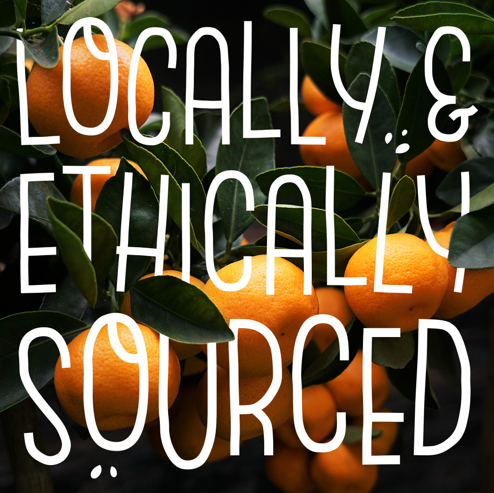
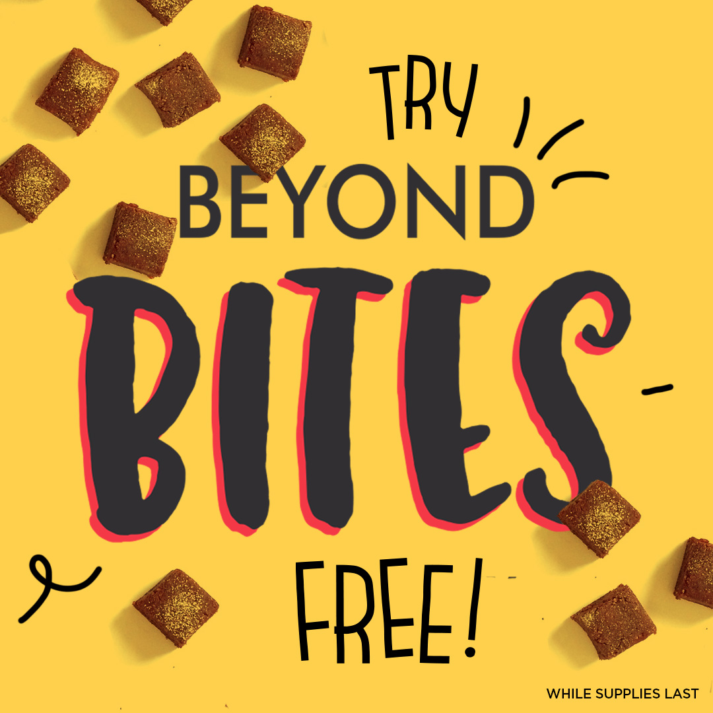

Caption: Each and every one of our ingredients is carefully selected and sourced. We think you’ll taste the difference with every bite! (Pun intended!)
#beyondbites #eatlocal #snacktime #healthysnacks #healthyeating #superfoods #organic #wholefoods #dairyfree #nongmo #vegan #vegetarian #fruit #veggies #glutenfree #delicious #instayum
Post Date: March 21
Likes: deleted by RL
Comments: deleted by RL
Profile Vists: deleted by RL
Reach: deleted by RL
Caption: No additives, no fillers, no junk. 100% REAL food!
#beyondbites #realfood #wholefoods #fruit #snacktime #healthysnacks #healthyeating #superfoods #organic #wholefoods #dairyfree #nongmo #vegan #vegetarian #glutenfree #delicious #instayum
Post Date: March 23
Likes: 59
Comments: 4
Profile Vists: 0
Reach: 134
Caption: THE WORLD'S SMARTEST SNACKS. Introducing NEW Beyond Bites™ with 100% locally sourced fairtrade organic ingredients. For only a limited time TRY Beyond Bites™ FREE. (While supplies last.) http://ow.ly/seNj30j3G1P
Post Date: March 26
Likes: deleted by RL
Comments: deleted by RL
Profile Vists: deleted by RL
Reach: deleted by RL
Caption: Vitamins, antioxidants, and superfoods, oh my! We pack a lot of nutrition in Beyond Bites. Your body will thank you!
#beyondbites #superfoods #strawberries #snacktime #healthysnacks #healthyeating #superfoods #organic #wholefoods #dairyfree #nongmo #vegan #vegetarian #fruit #veggies #glutenfree #delicious #instayum
Post Date: March 29
Likes: deleted by RL
Comments: deleted by RL
Profile Vists: deleted by RL
Reach: deleted by RL
Caption: Can you take the heat? Our new Mango + Cayenne super bites are the perfect sweet & spicy combo, ready to tantalize your taste buds with a burst of spice and nutrition. We can’t wait to hear what you think!
#beyondbites #snacktime #healthysnacks #healthyeating #superfoods #organic #wholefoods #dairyfree #nongmo #vegan #vegetarian #fruit #veggies #glutenfree #delicious #instayum
Post Date: April 3
Likes: deleted by RL
Comments: deleted by RL
Profile Vists: deleted by RL
Reach: deleted by RL
Caption: It’s time for some next-level snackage and we’re here to help. Take your afternoon treat from “so so” to “mmm, woah!” by adding our fruit bites to your favorite smoothie bowl. Who’s ready to take things up a notch?
#mmm #smoothiebowl #smoothiebowls #snacktime #healthysnacks #healthyeatinghabits #healthyeating #superfoods #organic #wholefoods #dairyfree #nongmo #vegan #vegetarian #glutenfree #delicious #fruit #instayummy #beyondbites #journeyfoods
Post Date: April 6
Likes: 40
Comments: 0
Profile Vists: 2
Reach: 85
Caption: Looking for something healthy? We have just what you’re searching for. Our new super bites are full of antioxidants and made from natural, wholesome fruit. They’re sweetened from just fruit (no added sugar!) and are sure to be your new favorite snack. Find us at your local @wholefoods or shop online at @thrivemkt, @amazon, @boxedwholesale, and @jet.
#beyondbites #snacktime #healthysnacks #healthyeating #superfoods #organic #wholefoods #dairyfree #nongmo #vegan #vegetarian #glutenfree #delicious #fruit #veggies #instayum
Post Date: April 13
Likes: deleted by RL
Comments: deleted by RL
Profile Vists: deleted by RL
Reach: deleted by RL

Caption: Gotta stay afloat! Did you know? Watermelon is not only high in vitamins A and C, but it’s super hydrating. So whether you’re cruising through your snacking journey on a watermelon float or just munching on the delicious fruit, sail on!
#journeybites #eatlocal #snacktime #healthysnacks #healthyeating #superfoods #organic #wholefoods #dairyfree #enjoylife #vegan #vegetarian #fruit #veggies #delicious #instayum #relax #nature #watermelon #enjoythejourney #vitaminc
Post Date: April 25
Likes: 29
Comments: 0
Profile Vists: 2
Reach: 107
Caption: Life in color. The most nutritious foods are some of the brightest. On your snacking journey, hunt down the freshest, most colorful fruits full of antioxidants and vitamins. And when you need an extra boost, grab a pack of Journey Bites for a guaranteed healthful snack.
#nutris #lifeincolor #nutritious #art #urbanart #cityart #snacking #colorfulfruit #eatlocal #snacktime #healthysnacks #healthyeating #superfoods #organic #wholefoods #dairyfree #nongmo #vegan #vegetarian #fruit #veggies #glutenfree #delicious #antioxidants #instayum #journeyfood #journeybites
Post Date: May 1
Likes: 31
Comments: 4
Profile Vists: 2
Reach: 92
Caption: Healthy eating is always on dock, but exercise is equally important. Step outside, get some fresh air, and refuel with Beyond Bites. They’re sure to give you the pep in your step you’ve been looking for.
#journeybites #journeyfoods #eatlocal #snacktime #healthysnacks #healthyeating #superfoods #organic #wholefoods #dairyfree #nongmo #vegan #vegetarian
#fruit #veggies #glutenfree #delicious #instayum #exerci
Post Date: May 10
Likes: 71
Comments: 3
Profile Vists: 2
Reach: 140
.gif)
Caption: We’re evolving healthy eating. No matter where you are on your snacking journey, we’re here to inspire you with our one-part fruit, one-part good science, two bits of awesome bites.
#journeybites #journeyfoods #global #local#snacktime #healthysnacks #healthyeating#superfoods #organic #wholefoods#foodtech #plantbased #nongmo #vegan#vegetarian
#fruit #veggies #glutenfree #delicious#instayum #science #video #animation#startupbrand #logo #healthybrand #healthybrands
Post Date: May 4
Likes: 46
Comments: 0
Profile Vists: 5
Reach: 110
Caption: Happy Mother’s Day to the women who teach us how to be the healthiest, happiest, and best version of ourselves. Today we celebrate YOU!
#mothersday #celebratelife #celebratewomen #celebratelove #mom #momlife #busymom #busymomlife #momblogger #mombloggers #healthymomblogger #momsofinstagram #momsquad #mommade #mommademe #healthylifestyle #momsoninstagram #journeyfoods #journeybites
Post Date: May 13
Likes: 55
Comments: 3
Profile Vists: 4
Reach: 154
Caption: Mood: Super chill. What’s better than surrounding yourself with nature’s goodness. Nothing like a room full of fresh fruit and plants to remind us how great Mother Nature really is.
#journeybites #eatlocal #snacktime #healthysnacks #healthyeating #superfoods #organic #wholefoods #dairyfree #nongmo #vegan #vegetarian #fruit #veggies #glutenfree #delicious #instayum #relax #mood #nature
Post Date: May 19
Likes: 84
Comments: 1
Profile Vists: 3
Reach: 191
Caption: We love all fruits and the plentitude of vitamins they provide. Did you know that a 1‐cup serving of pineapple contains 131% of your daily required vitamin C? This antioxidant is great for the skin, assisting in cell regrowth and rejuvenation.
#journeybites #eatlocal #snacktime #healthysnacks #healthyeating #superfoods #organic #wholefoods #dairyfree #nongmo #vegan #vegetarian #fruit #veggies #glutenfree #delicious #instayum #vitamins #skincare #antioxidants
Post Date: May 16
Likes: 62
Comments: 3
Profile Vists: 3
Reach: 172
Caption: No matter how you SLICE IT, we're ready for summer. One bite at a time, we're celebrating Memorial Day, the fresh and fun way!
#thankyouveterans #memorialdayweekend #memorialday #MDW2018 #journeybites #eatlocal #snacktime#healthysnacks #healthyeating #superfoods #organic #wholefoods#dairyfree #nongmo #vegan #vegetarian #fruit #veggies #glutenfree #delicious#instayum #happy #summer #eatright #amazing #nature
Post Date: May 31
Likes: 38
Comments: 0
Profile Vists: 1
Reach: 181
Caption: Need some superfood training wheels? We've got you covered with Beyond Bites. Prepare to ride into a world of health.
#journeybites #eatlocal #snacktime #healthysnacks #healthyeating #superfoods #organic #wholefoods #dairyfree #nongmo #vegan #vegetarian #fruit #veggies #glutenfree #delicious #instayum #thegoodlife
Post Date: June 4
Likes:
Comments:
Profile Vists:
Reach:
Caption: Give extra love and strength to the world. Spread happiness, positivity, and joy. Happy Pride Month!
#pride #pridemonth #pridemonth2018 #liveyourtruth #spreadhappiness #byou #beyou #beyourself #positivity #love
Post Date: June 7
Likes:
Comments:
Profile Vists:
Reach:
Caption: Want that glow everyone is after? All you need is a healthy snack with some time in the sun and you'll feel amazing in no time!
#journeybites #eatlocal #snacktime#healthysnacks #healthyeating
#superfoods #organic #wholefoods#dairyfree #nongmo #vegan #vegetarian
#fruit #veggies #glutenfree #delicious#instayum #happy #summer #eatright #amazing #nature
Post Date: planned - June 12
Likes:
Comments:
Profile Vists:
Reach:
Caption:
Post Date: planned - June 15
Likes:
Comments:
Profile Vists:
Reach:
Caption:Yoga, the ancient physical, mental, and spiritual practice originating in India, is an amazing way to unite the body and consciousness. Today, should be a reminder to slow down, take a moment for yourself, breathe, and connect yourself to your thoughts. As busy as we all are, taking a break to relax and wind down your thoughts is something we often forget about. So today, take a few moments for yourself. Serenity now!
Post Date: planned - June 21
Likes:
Comments:
Profile Vists:
Reach:
Caption: We've made it! It's Summer!! Who's got big plans for vacations, spending time in the sun, enjoying the fresh outside air...need we go on? How will you be spending the season? Tell us in the comments below!
Post Date: planned - June 22
Likes:
Comments:
Profile Vists:
Reach:
Caption:
Post Date: planned - June 25
Likes:
Comments:
Profile Vists:
Reach:
Caption: Who's headed to the Chicago @VegandaleFestival at Grant Park today? Get hungry for a plethora of ethically-sourced vegan eats with live music, games, and giveaways all day long. 100% vegan food, craft brews, wine, and sunshine. What more can we ask for?
Post Date: planned - June 30
Likes:
Comments:
Profile Vists:
Reach: